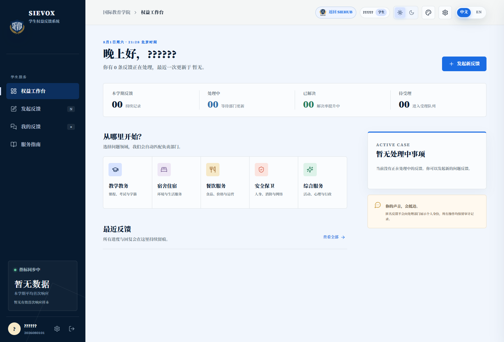

先听完整
从宿舍、餐饮、教学空间到校园活动，先理解事情发生的现场，再判断问题真正需要什么。
LISTEN FIRSTSTUDENT RIGHTS DEPARTMENT
一张反馈单，一次回访，一条真正能被看见的改善路径。学生权益部把同学的日常体验，带到可以行动的地方。

截图来自本地登录后的真实系统界面。
OUR METHOD
权益工作不是替同学说话，而是让同学的声音有证据、有路径、有回音。我们做记录，也做连接；做反馈，也做回访。
从宿舍、餐饮、教学空间到校园活动，先理解事情发生的现场，再判断问题真正需要什么。
LISTEN FIRST通过 SIEVOX 记录反馈、分派事项、标记状态，同学不用反复询问“现在到哪一步了”。
TRACK THE CHANGE一次处理完成之后，还要回到同学身边确认体验，把个案变成下一次提案和改善的依据。
CLOSE THE LOOPSIEVOX SERVICE DESK
SIEHUB 里的 SIEVOX 是学生权益部的工作台。反馈提交后进入统一队列，分类、协同、回访与归档都留下记录。
条反馈完成闭环
RESPONSE RATE96%首次响应及时率
FIELD NOTES
提案大赛、心栈 SIE、百花心晴集市和院周活动，让“被看见”成为校园里真实发生的事。
把观察写成方案，把方案带到可以讨论的桌面。
READ THE ROOM ↗给忙碌的同学留一块可以呼吸、表达与被照顾的空间。
MAKE SPACE ↗从最美班级到最美宿舍，让集体生活的细节被认真记录。
SEE THE GOOD ↗RIGHTS SHOWCASE
本地编辑模式下可上传每个活动的多张照片；推送到服务器后，学生端与志愿者端仅展示已发布的只读版本。
MEMBER BOARD
展示板预留成员照片位，后续本地编辑时可替换为正式头像与介绍。
统筹学生权益部重点事项、跨部门沟通与服务闭环，保证同学诉求能被持续追踪。
负责反馈受理、事项分派与回访节奏。
负责活动策划、权益调研与展示台素材整理。